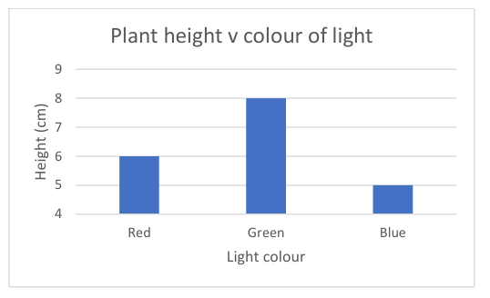
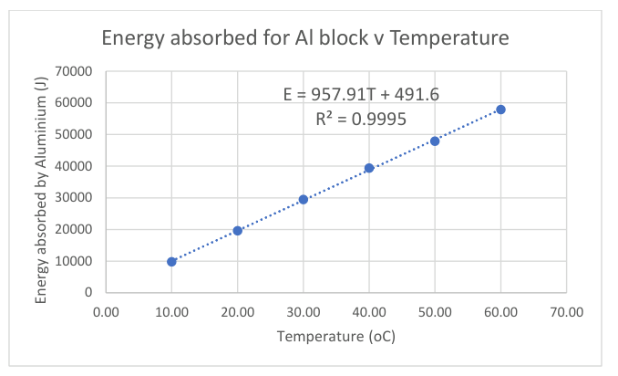
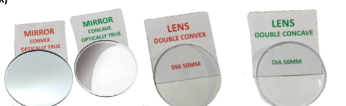
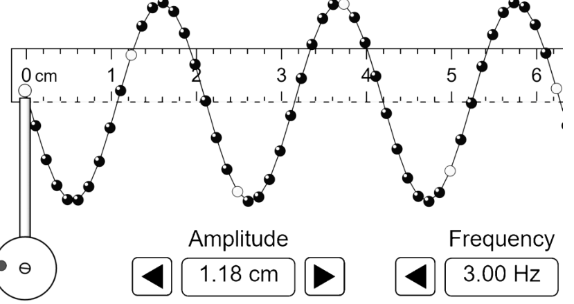
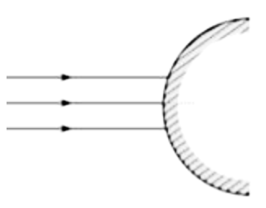
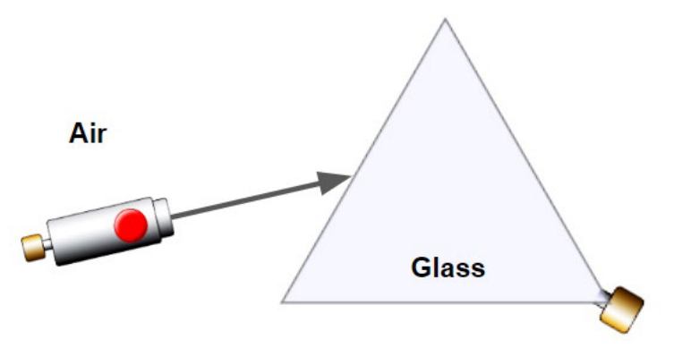
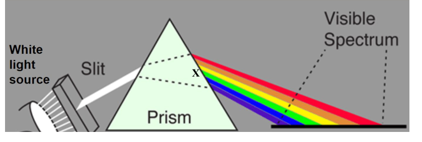

This exam covers scientific method / STELR and waves, sound and light. The original paper also had an astronomy section, which is not in the current course, so it has been left out.
Scientific method / STELR (30 marks)
Match each term with the description that best explains it.
| Description | Term |
|---|---|
| Examination of data, observations or results to determine their validity, reliability and significance. | |
| A statement or decision reached after considering the evidence, data or information from an experiment. | |
| An educated guess or possible explanation, based on observations, that can be tested by experiment. | |
| Unpredictable fluctuations in measurements or observations due to uncontrollable factors. | |
| Existing knowledge, principles and concepts in a field, established through scientific research and experimentation. | |
| Consistent, predictable inaccuracies in measurements due to flaws in the set-up, instruments or procedures. |
Question 2 (4 marks)
Tom and Evan are heating water. They change how high the beaker sits above a Bunsen burner and time how long the water takes to boil.
Procedure:
- Fill the glass beaker with distilled water.
- Place the thermometer in the water, with the bulb fully submerged, and record the initial temperature.
- Light the Bunsen burner and position it under the beaker, 2 cm below it, so the water is heated evenly.
- Start the stopwatch as soon as the burner is lit.
- Time how long the water takes to boil.
- Repeat, increasing the height by 2 cm each trial, for five trials.
| Variable type | Variable | Type of data |
|---|---|---|
| Independent variable | ||
| Dependent variable |
Appropriate graph type:
State two control variables for this experiment.
Any two reasonable responses, e.g. the amount of water; the change in temperature (starting temperature of the water); the type of beaker; the flame setting.
Question 3 (4 marks)
Lucas and Will investigate how the colour of light affects plant height.
Procedure:
- Pour some dirt into whatever pots you have.
- Place any seed in the dirt of each pot.
- Use the hose to spray all the pots with water.
- Grow each pot under a lamp covered with a different coloured filter (red, green, blue).
- Record the height of each plant after 6 and 12 days.
Hypothesis: the plants will grow best under red light, then green light, then blue light.
Based on the method, is this likely to be a fair test? Explain your answer.
No (1 mark). There are many uncontrolled variables, e.g. the amount of water, the volume of dirt, the pot size and the type of seed (1 mark).

The students conclude that seeds grown under green light grow twice as high as those under red light. Is this conclusion correct or incorrect? Explain.
Incorrect (1 mark). The vertical axis doesn't start at zero, so the green column only looks twice as tall: green is about 8 cm and red about 6 cm (1 mark).
Question 4 (9 marks)
Jarvis and Ben change the temperature of a 1 kg block of aluminium and measure how much energy it absorbs. The accepted value of the energy absorbed per degree for aluminium is 980 J/°C. The gradient of the graph gives the energy absorbed per degree.

Based on the graph, temperature is the and energy absorbed is the .
Comment on the accuracy of the data. Explain.
Accurate (1 mark): the experimental value from the gradient (958 J/°C) is very close to the true value of 980 J/°C (1 mark).
Comment on the precision of the data.
Precise (1 mark): there is very little variation of the data from the trendline, or a very high correlation coefficient (1 mark).
The strength of the correlation (R2 = 0.9995) is .
Using the trendline equation, predict how much energy would be absorbed at 100 °C.
E = 957.91 × 100 + 491.6 = 96 283 J.
A factory has a large solar array to offset its energy use. The import tariff (buying from the grid) is $0.22 per kWh and the export tariff (selling to the grid) is $0.10 per kWh. Work out the cost for each period and the total for 24 hours (a negative cost means money earned).
| Time | Consumption (kW) | Production (kW) | Cost ($) |
|---|---|---|---|
| 0000–0600 | 450 | 0 | |
| 0600–1800 | 550 | 850 | |
| 1800–2400 | 600 | 0 | |
| Total |
0000–0600: 450 kW × 6 h = 2700 kWh × $0.22 = $594. 0600–1800: net export (850 − 550) × 12 h = 3600 kWh × $0.10 = $360 earned. 1800–2400: 600 × 6 = 3600 kWh × $0.22 = $792. Total = 594 − 360 + 792 = $1026.
State one source of renewable energy, with one advantage and one disadvantage of it.
Various responses (1 mark each), e.g. solar: advantage, no greenhouse gas emissions while operating; disadvantage, produces no power at night or on very cloudy days. Wind: advantage, wind will not run out; disadvantage, output depends on the wind and turbines can be noisy.
Waves, sound and light (35 marks)
Which statement about sound is incorrect?

Match the curved mirrors and lenses to the correct characteristics (concave mirror; convex mirror; concave lens; convex lens).
Which secondary colour is produced by adding red light and green light?
You want your Christmas gift package to be printed in red. How can you achieve this with colour printing?
Magenta pigment absorbs green and yellow pigment absorbs blue, so only red is reflected.
Question 5 (4 marks)
A slinky is attached to an oscillator, which generates the waves shown. The oscillator settings are shown, and a ruler behind the slinky gives the scale.

Estimate the wavelength of the waves, to one decimal place.
State the frequency of the waves.
Calculate the speed of the wave in the slinky.
v = fλ = 3 × 2.1 = 6.3 cm/s (follow through from your answers to a and b).
Question 6 (4 marks)
The diagram shows three parallel rays of light directed at a convex mirror.

On paper, (a) draw the paths of the two outer rays after they hit the mirror, and (b) find and label the virtual focus, showing how you located it. Describe them, then compare.
(a) The middle ray reflects straight back. The two outer rays reflect so they spread out (diverge), each obeying angle of incidence = angle of reflection about its normal (1 mark for the two lines, 1 mark for correct angles by eye).
(b) Extend the reflected rays backwards behind the mirror with dashed lines (1 mark); they meet at a point behind the mirror on the principal axis, labelled the virtual focus (1 mark).
Question 7 (7 marks)

On paper, show the path of the light ray as it travels through and leaves the prism. Label the normals, the angles of incidence and the angles of refraction. Describe it, then compare.
- Normal lines drawn at 90° to each surface where the ray enters and leaves (1 mark).
- Entering the glass, the ray refracts towards the normal (1 mark).
- Leaving the glass, the ray refracts away from the normal (1 mark), so overall it bends towards the base of the prism.
- Angles of incidence and refraction labelled, measured from the normal (1 mark).

White light being split into seven colours by a prism is called .
State what you would see outside the prism if violet light met the second side of the prism (X) at an angle greater than the critical angle for violet light in glass. Explain.
You would see the full spectrum minus violet (1 mark), because the violet light undergoes total internal reflection at X and stays inside the prism (1 mark).
Question 8 (5 marks)
Lunar Laser Ranging measures the distance between the Earth and the Moon from the round-trip time of laser light pulses, which travel at the speed of light and are reflected back to Earth from the Moon's surface.
A pulse of light takes 2.55 s for the total round trip. Calculate the distance from the Earth to the Moon.
d = v × t = 300 000 km/s × (2.55 ÷ 2) = 382 500 km.
When Apollo 11 landed on the Moon to place the mirror, no sound could be heard outside the lander. Explain why there can be no sound on the Moon.
Sound needs a medium (such as air) to travel through (1 mark). There is no air (atmosphere) on the Moon (1 mark).
When the Saturn V rocket launched from Earth, it created a sonic boom. What causes a sonic boom?
An object travelling faster than the speed of sound.
Question 9 (6 marks)
Light production can be divided into incandescence and luminescence.
Light bulb (tungsten filament):
Glow sticks:
Stars:
Glow-worm light:
Explain why the Moon is considered non-luminous, even though we can see it so brightly at night.
The Moon doesn't produce its own visible light, so it is non-luminous (1 mark). We see it because it reflects light from the Sun (1 mark).
Match each term with the description that best explains it.
| Description | Term |
|---|---|
| Materials that reflect some light (giving them colour) but absorb the rest and do not transmit any. | |
| Materials that scramble rays, transmitting most light. | |
| Parallel light rays are reflected at different angles; objects can be seen, but no clear image forms. | |
| Parallel rays are reflected parallel, which leads to clear images. | |
| Materials that transmit almost all light. |